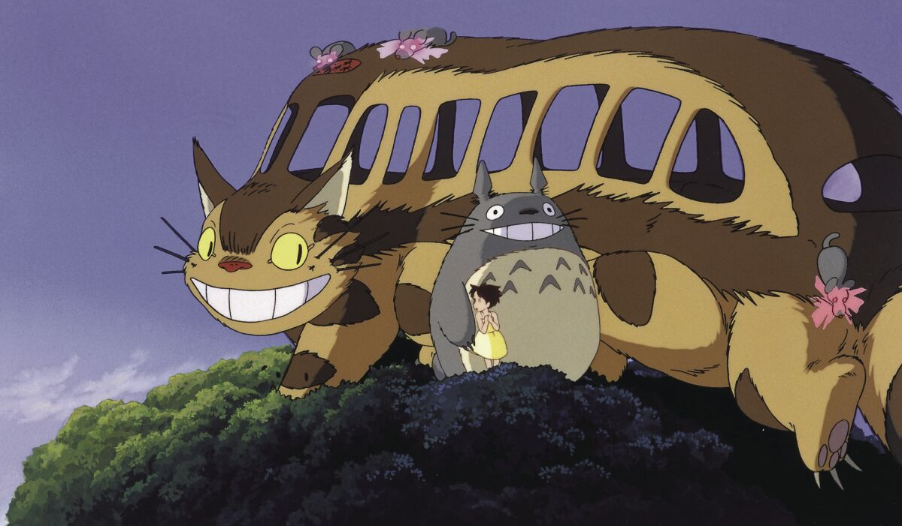

GHIBLI STUDIO
Ghibli Studio History
A Japanese cartoon company called Studio Ghibli is located in Koganei, Tokyo. It has a significant influence in the animation sector and has broadened its range of media offerings to include short features, television advertisements, and two television movies. Audiences have responded favorably to their work, and it has even won accolades. On June 15, 1985, producers Toshio Suzuki and Hayao Miyazaki, as well as Isao Takahata, established the company. Additionally, it has worked with video game companies on the visual creation of a number of titles.
The studio has primarily made films by Miyazaki, with Takahata being the company's second most productive director. Yoshifumi Kond, Hiroyuki Morita, Gor Miyazaki, and Hiromasa Yonebayashi are a few other filmmakers who have collaborated with Studio Ghibli. The majority of Miyazaki's Studio Ghibli movies have music by composer Joe Hisaishi. The workshop used to be located in Kichijiji, Musashino, Tokyo.
The Walt Disney Company and Tokuma Shoten partnered in August 1996, with Walt Disney Studios serving as Tokuma Shoten's primary foreign publisher for its Studio Ghibli animated picture output. Disney also promised to finance 10% of the studio's production expenses as part of this agreement. Since that time, Disney has re-dubbed all three of the aforementioned Studio Ghibli features by Miyazaki that were originally dubbed by Streamline Pictures. On June 1, 1997, Tokuma Shoten Publishing combined its media activities by combining Studio Ghibli, Tokuma Shoten Intermedia software and Tokuma International under one address.
The Ghibli Museum debuted in Mitaka, Tokyo, in October 2001. It features cartoons, including several short Studio Ghibli films that aren't accessible anywhere else, and displays based on Studio Ghibli movies. The collaboration between Tokuma Shoten and Studio Ghibli terminated in April 2005 when Studio Ghibli was split off from Tokuma Shoten and re-established as an autonomous business with a new office. Studio Ghibli was a subsidiary brand of Tokuma Shoten from 1999 to 2005.
Koji Hoshino, a previous president of Walt Disney Japan, took over as Studio Ghibli president on February 1, 2008, replacing Toshio Suzuki, who had served in that capacity since 2005. Suzuki claimed he preferred to make improvements to movies himself rather than expecting his staff to do so. Because Hoshino has helped Studio Ghibli market its recordings since 1996 and has also assisted in the release of the Princess Mononoke movie in the United States, Suzuki chose to give over the chair to Hoshino. Suzuki is still a member of the board of directors for the business.
The top ten highest-grossing anime feature pictures produced in Japan include five of the studio's movies. Second-placed Spirited Away made over US$380 million globally and 31.68 billion yen in Japan, while Princess Mononoke came in at number four with a take of 20.18 billion yen. The Animage Grand Prix honor has been given to many of their works. The Japan Academy Prize for Animation of the Year has been awarded to four. Five of their movies have been nominated for Academy Awards. The 2002 Golden Bear and the 2003 Academy Award for Best Animated Feature went to Spirited Away.
Hayao Miyazaki conducted a news conference in Venice on Sunday, September 1, 2013, to announce his retirement. He said: "I know I've said I'd retire a lot in the past. Many of you must be thinking, "Again?" but this time I really mean it. Following Miyazaki's departure, Studio Ghibli briefly halted production on August 3, 2014. Miyazaki came out of seclusion to helm a new feature film, How Do You Live? (2023), which he plans to be his final movie, Suzuki revealed in February 2017.
Hayao Miyazaki came out of retirement to produce a new feature picture with Studio Ghibli, Toshio Suzuki revealed in February 2017. Toshio Suzuki announced in May 2020 that Studio Ghibli is working on a new Goro Miyazaki movie. Diana Wynne Jones' book Earwig and the Witch will be the basis for the movie, Studio Ghibli revealed on June 3, 2020. The movie, which will have its broadcast premiere on NHK in late 2020, was revealed as the studio's first fully 3D computer-animated Ghibli feature.